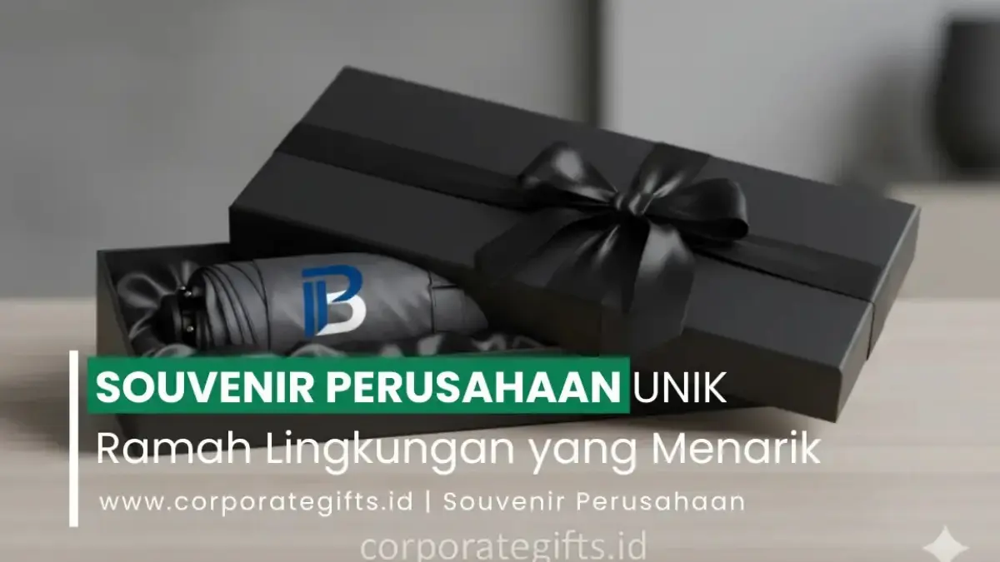

Corporate Gifts ID - Souvenir perusahaan unik ramah lingkungan adalah hadiah korporat yang dibuat dari bahan alami, daur ulang, atau dapat digunakan kembali, seperti tumbler bambu, tote bag kanvas, dan alat tulis dari kertas daur ulang, yang dipilih untuk mendukung citra perusahaan peduli lingkungan sekaligus menjadi media branding jangka panjang.
Kesadaran akan pentingnya menjaga kelestarian lingkungan kini telah bertransformasi menjadi pilar strategis dalam operasional bisnis modern. Banyak perusahaan mulai beralih dari penggunaan barang sekali pakai menuju produk yang lebih berkelanjutan, termasuk dalam pemilihan cinderamata untuk agenda kantor, seminar, hingga program Corporate Social Responsibility (CSR).
Poin Kunci Souvenir Ramah Lingkungan:
- Nilai Ganda: Menggabungkan fungsionalitas harian, estetika premium, dan tanggung jawab sosial lingkungan (ESG).
- Empat Ciri Utama: Bahan alami/daur ulang, sifat reusable, proses produksi beretika, serta durabilitas tinggi.
- Ragam Produk Populer: Tumbler bambu, tote bag kanvas katun, notebook daur ulang, cutlery kayu, dan lilin soy wax.
- Dampak Reputasi: Memperkuat kepercayaan publik, membangun kebanggaan karyawan (employer branding), dan mendukung laporan keberlanjutan.
Mengapa Souvenir Ramah Lingkungan Semakin Diminati Perusahaan
Souvenir ramah lingkungan diminati karena menggabungkan tiga hal sekaligus: fungsi nyata, estetika menarik, dan tanggung jawab sosial. Memilih souvenir eco-friendly berarti perusahaan menunjukkan komitmen nyata terhadap keberlanjutan, bukan sekadar formalitas acara.
Souvenir hijau seperti tote bag kanvas custom, tumbler bambu, atau perlengkapan kerja organik menyampaikan pesan bahwa perusahaan peduli terhadap lingkungan dan komunitas sekitarnya. Konsep ini sejalan dengan strategi penguatan employer branding dan pelestarian bumi.
Ciri-Ciri Souvenir Ramah Lingkungan yang Berkualitas
Souvenir yang benar-benar ramah lingkungan bukan hanya yang bebas plastik. Empat ciri berikut menunjukkan sebuah produk cinderamata benar-benar berkelanjutan:
- Menggunakan bahan alami atau daur ulang: Bambu, kayu bersertifikasi legal, serat goni, atau kertas daur ulang bebas klorin.
- Bersifat reusable (dapat digunakan kembali): Seperti botol minum stainless food grade, tote bag tebal, atau set alat makan kayu.
- Proses produksinya etis: Tidak menggunakan bahan kimia berbahaya dan melibatkan tenaga kerja dengan standar yang layak.
- Memiliki fungsi nyata dan estetika elegan: Agar penerima merasa souvenir tersebut layak digunakan dalam rutinitas kerja jangka panjang.
Tabel Rekomendasi Kategori Souvenir Eco-Friendly Korporat
Berikut adalah matriks perbandingan kategori souvenir ramah lingkungan berdasarkan material, kegunaan utama, dan target acara:
| Kategori Souvenir | Bahan Utama | Fokus Kegunaan | Cocok untuk Acara |
|---|---|---|---|
| Office Stationery Eco | Kertas daur ulang & bambu | Mencatat, rapat harian, pelatihan | Seminar kit, workshop pelatihan |
| Reusable Drinkware | Stainless SUS 304 & bambu alami | Wadah hidrasi harian, pengurang plastik | Welcome kit, hadiah karyawan baru |
| Eco Lifestyle & Apparel | Kanvas katun organik & serat goni | Tas multifungsi belanja dan laptop | Event pameran, gathering instansi |
| Wellness & Relaxation | Soy wax nabati & minyak atsiri | Aromaterapi relaksasi meja kerja | Hampers akhir tahun, kado relasi VIP |

Koleksi souvenir kantor ramah lingkungan fungsional dengan sentuhan bahan alami yang elegan.
Inspirasi Souvenir Perusahaan Unik Ramah Lingkungan
Berikut beberapa ide souvenir perusahaan ramah lingkungan yang menarik sekaligus bernilai positif bagi penerimanya:
1. Souvenir dari Bahan Daur Ulang
- Notebook daur ulang dengan logo perusahaan: Menggunakan kertas hasil proses recycling berkualitas tinggi, sangat pas untuk kebutuhan seminar kit atau pelatihan.
- Pulpen bambu atau bahan jerami gandum (wheat straw): Terlihat unik, modern, dan bebas dari limbah plastik murni.
- Kotak penyimpanan kecil dari serat alam: Cocok sebagai organizer meja kerja untuk merchandise kantor.
2. Souvenir Fungsional dan Reusable
- Tumbler bambu custom nama penerima: Berguna sehari-hari sekaligus mendukung pengurangan botol plastik sekali pakai di kantor.
- Tote bag kanvas custom logo: Merchandise multifungsi yang diminati karena kuat, memiliki area branding luas, dan dapat dipakai berulang kali.
- Set alat makan kayu atau bambu: Pilihan tepat untuk mendukung program Go Green Office atau cinderamata kegiatan CSR.
3. Souvenir Bernuansa Alam dan Relaksasi
- Tanaman mini sukulen dalam pot ramah lingkungan: Melambangkan pertumbuhan kemitraan dan menghadirkan kesegaran di meja kerja.
- Lilin aromaterapi alami soy wax: Memberikan efek relaksasi yang menenangkan di ruang kerja.
- Sabun organik handmade: Pilihan berkelas untuk paket hampers perusahaan bernuansa natural dan sehat.
Manfaat Souvenir Ramah Lingkungan bagi Branding Perusahaan
Memberikan souvenir ramah lingkungan mencerminkan citra perusahaan yang peduli dan bertanggung jawab, sekaligus memperkuat reputasi perusahaan di mata klien, karyawan, dan mitra bisnis:
- Meningkatkan kepercayaan publik: Pelanggan dan rekanan bisnis lebih menghargai brand yang memiliki kepedulian sosial nyata.
- Memperkuat budaya kerja hijau: Karyawan merasa bangga menjadi bagian dari institusi yang berorientasi pada keberlanjutan.
- Mendukung tanggung jawab sosial perusahaan (CSR): Menjadi wujud nyata kontribusi korporasi dalam kampanye lingkungan global.
Tips Memilih Souvenir Ramah Lingkungan untuk Perusahaan
- Pastikan bahan dan proses produksinya benar-benar eco-friendly: Jangan hanya tergiur label "green product", pastikan material dan kemasan dapat terurai atau didaur ulang secara optimal.
- Pilih desain yang konsisten dengan identitas brand: Gunakan palet warna dan gaya visual yang sejalan dengan brand guideline perusahaan.
- Gunakan layanan souvenir custom profesional: Kustomisasi grafir laser atau sablon ramah lingkungan membuat cinderamata lebih personal dan eksklusif.
- Pertimbangkan aspek kemasan minimalis: Gunakan kemasan dari kertas kraft daur ulang atau kain spunbond/furoshiki dan hindari plastik pembungkus berlebih.
Kesimpulan & Rekomendasi Pengadaan
Souvenir perusahaan unik ramah lingkungan menunjukkan bahwa perusahaan tidak hanya berorientasi pada profitabilitas, tetapi juga memiliki tanggung jawab sosial dan lingkungan. Dengan memilih produk yang fungsional, menarik, dan berkelanjutan, perusahaan tidak hanya memberikan hadiah, tetapi juga menanamkan nilai positif yang bertahan lama.
Konsultasikan kebutuhan merchandise ramah lingkungan perusahaan Anda bersama CorporateGifts.ID. Kunjungi katalog produk resmi kami atau ajukan permintaan penawaran harga resmi hari ini juga.